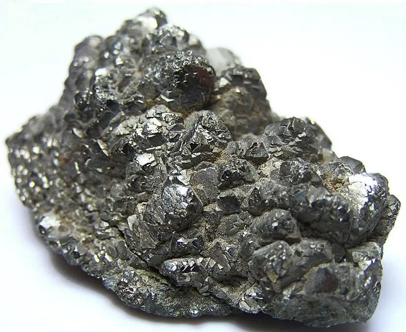

Таллий

Та́ллий (химический символ — Tl, от лат. Thallium) — химический элемент 13-й группы периодической таблицы химических элементов (по устаревшей классификации — элемент главной подгруппы III группы), шестого периода, с атомным номером 81. Относится к категориям тяжёлых металлов и постпереходных металлов. Простое вещество таллий — мягкий металл серебристо-белого цвета с серовато-голубоватым оттенком, быстро окисляющийся на воздухе ввиду своей высокой химической активности.
Таллий был открыт спектральным методом в 1861 году английским учёным Уильямом Круксом в шламах свинцовых камер сернокислотного завода вблизи города Аббероде, расположенного в горном массиве Гарц.Металлический таллий был независимо получен Уильямом Круксом и французским химиком Клодом-Огюстом Лами в 1862 году.
Основной источник Tl – отходы производства Cd, Cu, Pb. Для извлечения таллия проводят сульфатизацию сырья при 300–350 °C. Полученную массу выщелачивают водой, из раствора экстрагируют таллий 50%-ным раствором трибутилфосфата в керосине, а затем реэкстрагируют H2SO4 с добавкой H2O2. Из реэкстрактов выделяют таллий цементацией на цинковых листах. После переплавки под слоем NaOH получают таллий чистотой 99,99 %. Для более глубокой очистки применяют электролитическое рафинирование и зонную кристаллизацию.Таллий используют для получения подшипниковых и легкоплавких сплавов; амальгама таллия (tпл –59 °C) – рабочее тело низкотемпературных термометров; монокристаллы TlCl, TlBr и TlI используют в приборах ИК-техники; Tl2О входит в состав оптических стёкол; сульфиды и селениды таллия – компоненты полупроводниковых материалов. Тяжёлая жидкость Клеричи (раствор смеси солей таллия) применяется для разделения минералов по плотности.Таллий и его соединения высокотоксичны. Симптомы отравления – поражение нервной системы, почек, желудка, выпадение волос. Таллий проникает в организм через органы дыхания, неповреждённую кожу и пищеварительный тракт.